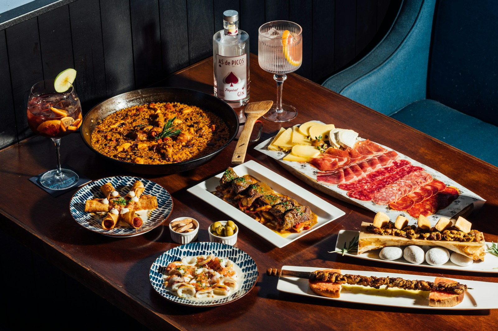

Valencia · Ciutat Vella
La Calita
Un lugar para compartir mesa en el casco antiguo de Valencia. Carta, bebidas, alérgenos y reservas en un solo sitio.
Sobre nosotros
Un espacio acogedor, pensado para compartir
La Calita está en la Calle de la Tapinería, en pleno casco antiguo. Aquí se viene a comer con calma, a probar varias cosas y a quedarse un rato más.
[Texto a completar con el local: historia, cocina y ambiente.]
Carta
Carta, bebidas y alérgenos
Consulta la carta oficial del local. Los documentos se abren en una pestaña nueva.
Nuestra carta
Versión en españolOur menu
English versionBebidas
Bebidas · DrinksAlérgenos
Información de alérgenos
Reservas
Reserva tu mesa
Las reservas se gestionan con el sistema que usa el local. Serás redirigido a la página oficial de reservas.
Ir a reservasHorarios de servicio: [pendiente de confirmar con el local].
Ubicación
Dónde estamos
C/ de la Tapinería, 1646001 València (Ciutat Vella)
Teléfono: [pendiente de confirmar con el local].
Propuesta Rivela
Rivela puede realizar el sitio de tu negocio
Esta es una demo creada por Rivela para mostrar una posible propuesta. Un sitio real se personaliza con los contenidos, las fotografías y los enlaces reales de tu local: carta, reservas, horarios y ubicación.
Desde 350 € (precio orientativo, a definir según el proyecto).
Contacto: rivelaastudio@gmail.com
Sitio Rivela: rivela-anteprima-251026